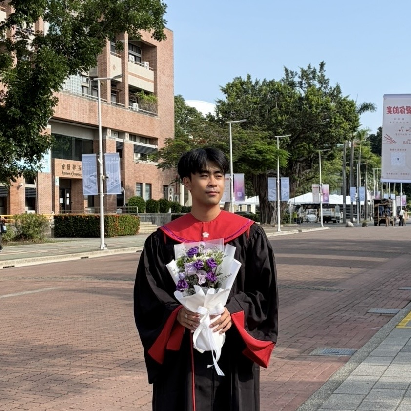

Operations Research . Industrial Engineering . Transportation
Wei-Chen (Gordon) Kuo
D44100015 [at] gs [dot] ncku [dot] edu [dot] tw
Connecting optimization with transportation, healthcare, and semiconductor manufacturing.
I am set to join Micron Technology as an Engineer, F11 ME FST WH in December 2026.
Recently, I graduated from National Cheng Kung University with BA in Political Science and a minor in Transportation and Coomunication Science.
I was advised by Prof. Pei-Chun Lin for my undergrad thesis and independent studies. I've also work with her as a Research Assistant on topics in healthcare OR, nursing, transportation.
As for industry experience, I worked as Industrial Engineer Intern at ASML and Logistics and Service Support Intern at IMS Nanofabrication.
I am interested in how mathematica models and heuristic algorithms can inform decisions in manufacturing, transportation, and healthcare systems.

Research interests
Transportaion OR, Healthcare OR, Optimization Methods for Semiconductor Manufacturing
Contact
I welcome conversations about optimization research, transportation, healthcare, and semiconductor manufacturing.
- D44100015@gs.ncku.edu.tw
- Connect with me on LinkedIn ↗
- GitHub
- WeichenKuo1216 ↗
- Curriculum Vitae (2026)
- View CV (PDF) ↗